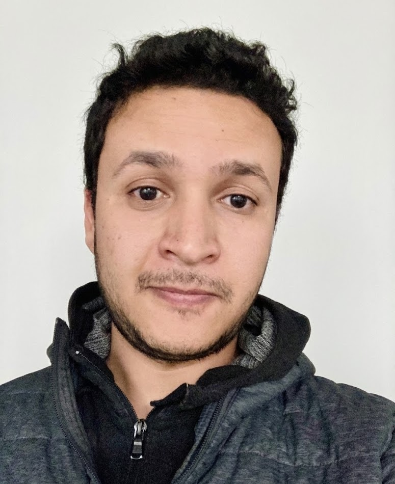

Postdoctoral Fellow · University of British Columbia
Experimentalist working on quantum transduction at the intersection of nanophotonics, solid-state physics, and quantum science.
About
I am a postdoctoral fellow in the Quantum Science and Technology Laboratory at UBC, led by Dr. Joseph Salfi. My current research focuses on quantum transduction in hybrid semiconductor–superconductor systems, exploring how to bridge quantum information between microwave and optical domains.
I received my Ph.D. in Materials Engineering from the University of Colorado Boulder (2024), where I worked in the Nanophotonics Lab under Dr. Won Park. My doctoral research centered on nanostructured materials for optical sensing, including hybrid plasmonic–upconversion optomechanical sensors and magneto-optical nanocomposite thin films.
Prior to joining UBC, I worked as a Product Manager at MSE Supplies LLC, where I translated customer requirements into specifications for nanotechnology and photonics products. I hold a B.S. in Materials Science & Engineering from North Carolina State University, with a minor in Physics.
Research
Microwave-to-optical conversion using hybrid semiconductor–superconductor platforms for quantum networks.
Spin-cavity coupling, spin-ensemble dynamics, and solid-state defect centers in silicon for quantum information.
Near-field light–matter interactions, upconversion nanoparticles, and plasmonic nanostructures for sensing.
Rare-earth-doped magnetic nanocomposites with engineered Verdet constants for Faraday-effect sensing.
Publications
Curriculum Vitae
Contact